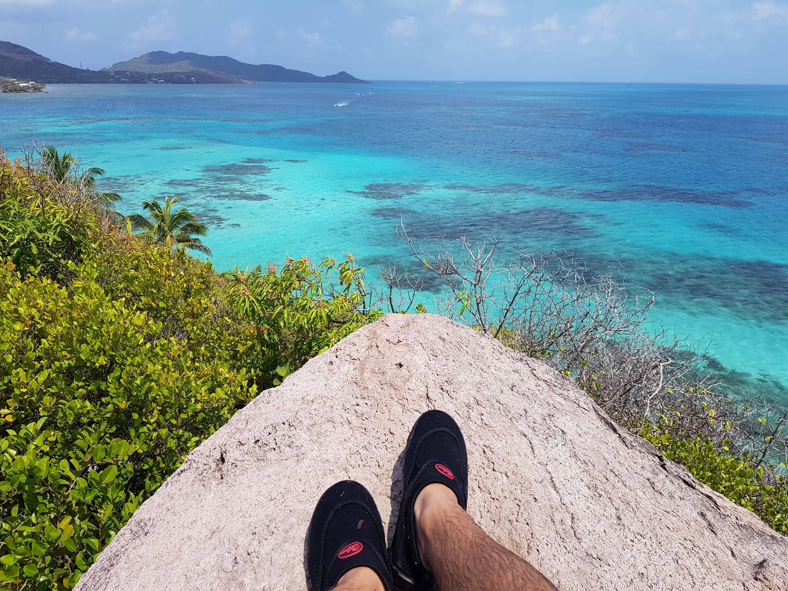
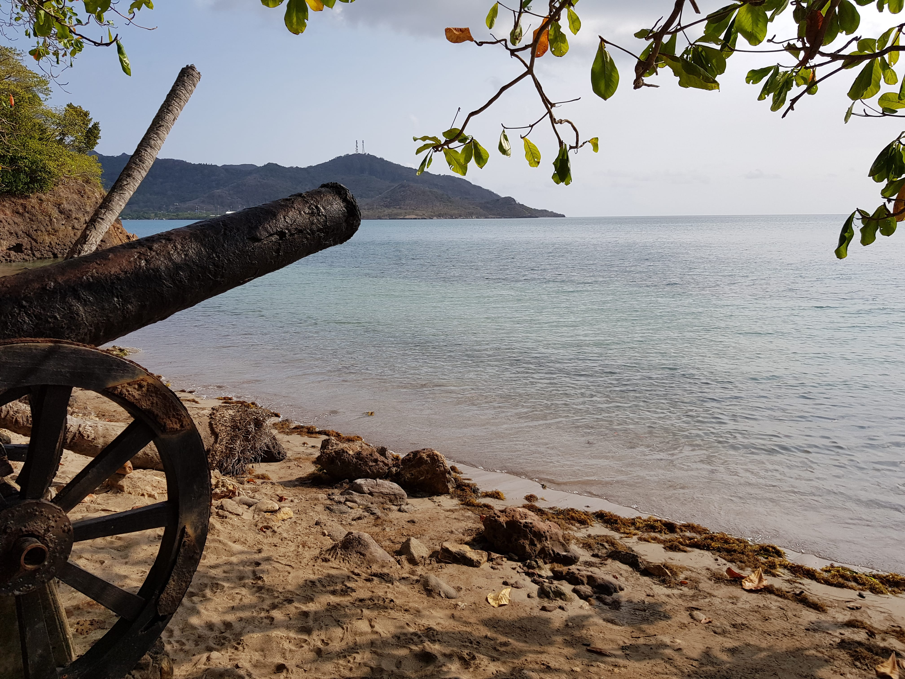
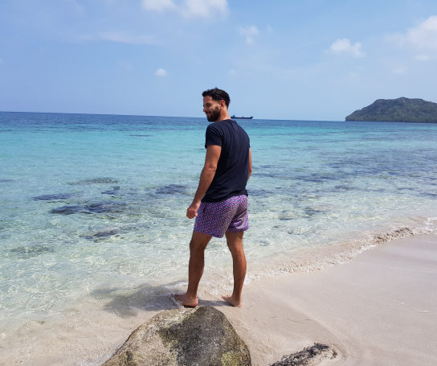
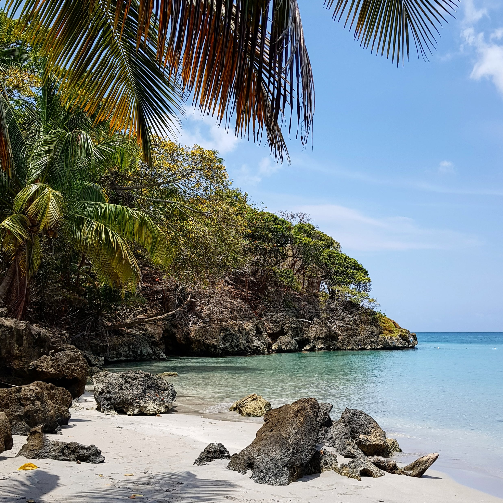
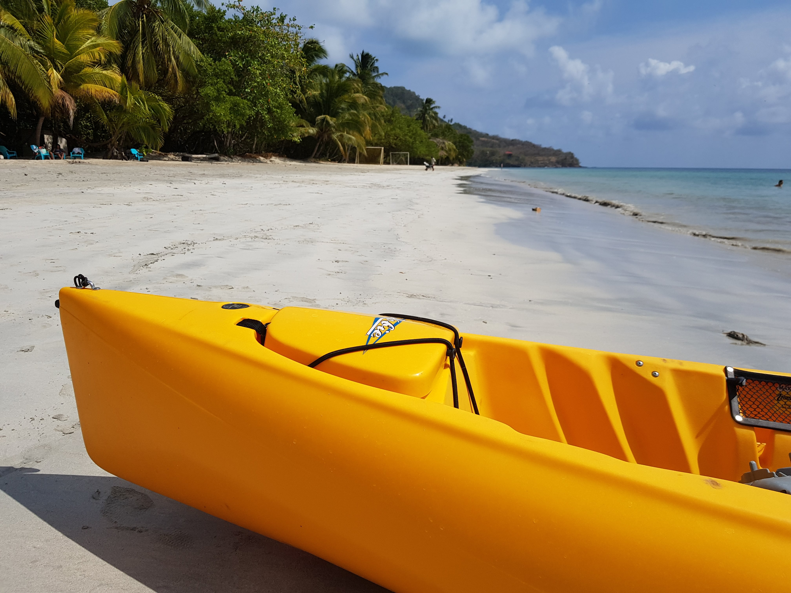
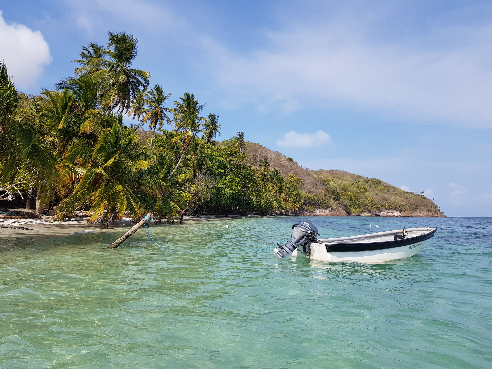
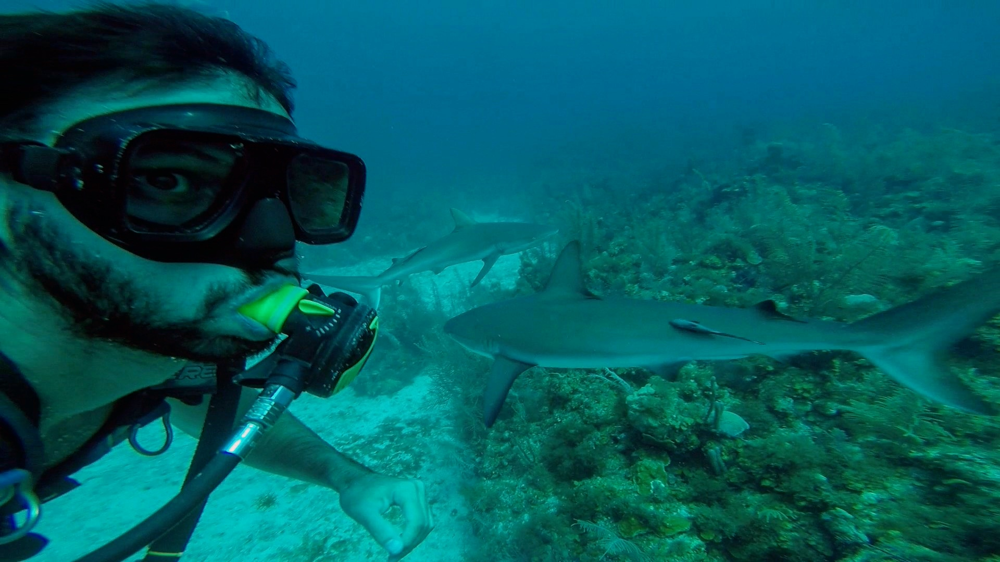
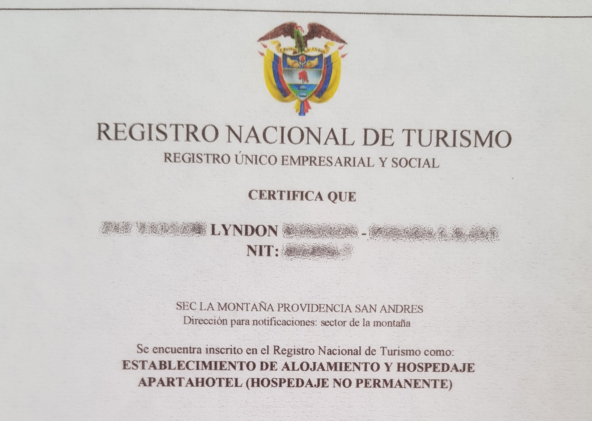

Por Gonzalo Volpe Gómez
¡Bienvenidos a la era digital! Sí, el primer contacto que tuve con Providencia fue por Instagram donde le di "me gusta" a una foto de un mar azul turquesa resplandeciente con el famoso Cayo Cangrejo de fondo. Definitivamente quería estar en ese lugar. Mi asombro fue extremo cuando investigando descubrí que la tercera barrera de coral más grande del mundo se encuentra en esta misma isla. ¿Mucha coincidencia? Ya tenía decidido mi próximo destino.
Cayo Cangrego, Isla Providencia, Colombia.
Tiempo después nos encontrábamos llegando con Deborah, totalmente mareados, a la desconocida Isla de Providencia y Santa Catalina en busca de conocer la vida marina de este paraíso colombiano. El ferry que nos transportó tardó alrededor de 3hs desde San Andrés y lo del mareo se debe a que la travesía es verdaderamente intensa. La misma empresa que ofrece el servicio te brinda medicación anti-mareos ya que la embarcación es pequeña y el trayecto que separa a San Andrés de Providencia y Santa Catalina es violento.
El precio online del ferry es aproximadamente $378.000 colombianos (20usd aproximadamente) ida y vuelta y la empresa que realiza la travesía es "Conocemos Navegando". Los recorridos son diarios y salen a las 8:00hs desde San Andrés y a las 14hs desde Providencia. La otra alternativa es tomar un vuelo que en 15 minutos nos deposita en el aeropuerto "El embrujo" de Providencia. Sí, no se a quién se le ocurrió ponerle a un aeropuerto "El embrujo", sin lugar a dudas prefiero el mareo y el mar. Una de las empresas que realiza el transporte aéreo es "Satena" que tiene vuelos ida y vuelta por unos $600.000 colombianos (186usd aproximadamente).
Les voy a ser sinceros, en Providencia tuvimos muy mala experiencia con dos hospedajes, al final les explicó en detalle lo que me sucedió, pero a su vez tuvimos una excelente experiencia en la hermosa posada de Lyndon.
Lamentablemente no hay transporte público en esta isla, por lo tanto, es necesario que optemos por alquilar motos o mulas (boogies) para largas distancias u optar por bicicletas o caminata para recorridos más cortos.
El famoso Puente de los Enamorados el cual une a Providencia con Santa Catalina.
Después de un viaje en ferry movimentado y de llegar a la confortable Posada de Lyndon, decidimos ir a almorzar y pasar el día en la Isla Santa Catalina (Colombia). A la misma se puede llegar a pie cruzando el colorido puente que la une con Providencia.
Una vez que llegamos a Santa Catalina solo tenemos dos senderos que podemos escoger. Nosotros elegimos el que nos llevaba a la famosa cabeza de Morgan, uno de los puntos turísticos más famosos de Santa Catalina. A mitad de camino nos encontramos con una playa pequeña, casi desierta, donde solo había un señor local bañándose, una lanchita y una pareja de argentinos que habíamos conocido en el ferry.
Isla Santa Catalina, Colombia.
Después de refrescarnos tranquilamente y de tener una muy buena conversación sobre viajes con la pareja argentina (habían estado en la Polinesia Francesa ¡Uno de mis sueños viajeros!) seguimos el camino hasta la Cabeza de Morgan.
Unos minutos después la teníamos enfrente, la cabeza de Morgan estaba ahí. ¿La cabeza de Morgan? Mejor dicho una roca no muy llamativa. Lo verdaderamente impactante del lugar es la vista desde lo alto de la playa contigua. Para los más aventureros, es posible saltar desde la cabeza al mar, eso sí, es solo para valientes y para personas con buen estado físico ya que es difícil volver a trepar desde el mar debido al formato irregular de las rocas.
En San Andrés sentí, lamentablemente, que había perdido tiempo en lugares como Rocky Cay y el hoyo soplador pudiendo dedicarle más tiempo a otros más lindos. En Providencia y Santa Catalina me estaba sucediendo otra vez lo mismo. Lo único que tenía en mente desde que había llegado era conocer el famoso Cayo Cangrejo y otro día más lo estaba demorando ¿Por qué? El día anterior habíamos quedado con la pareja de argentinos, Nacho y Clari, en recorrer toda la isla y nos parecía super divertida la idea de una aventura compartida.
Sin muchas expectativas, alquilamos una mula y comenzamos nuestras andadas. El vehículo costó $160.000 (50usd) + la recarga de gasolina y eso lo dividimos entre las dos parejas. Consejo: Fíjense cuando les entregan el carro (mula) que debajo del asiento tiene el indicador de gasolina. A nosotros no nos mostraron la cantidad de gasolina que tenía antes de usarlo y tengo mis dudas de si estaba verdaderamente lleno.
Después de unos minutos manejando nos detuvimos al costado del camino y descendimos por una escalera hasta la primera playa de nuestro recorrido: Almond Bay. En ella solo había dos personas atendiendo un bar y absolutamente nadie más. El agua era totalmente cristalina y la sensación de paz iba en aumento. Allá van a poder encontrar fácilmente estrellas de mar y nadar tranquilamente ya que el mar parece una piscina.
Almond Bay, Isla de Providencia, Colombia.
La segunda parada fue en Fresh Water (Agua Dulce) una playa muy bonita donde se encuentra el Restaurante y Hotel Miss Elma y la escuela de Buceo "Felipe Diving". Nosotros decidimos quedarnos en un recoveco de la playa donde se mezcla el mar con la vegetación y el paisaje es similar a algunas fotos de la paradisiaca Seychelles.
Fresh Water Bay (Agua Dulce), Isla de Providencia, Colombia.
Después de una mañana y un comienzo de mediodía increíbles decidimos hacer una parada en el Restaurante Café Studio donde comimos el típico plato caribeño: Pez con arroz de coco y patacones. Luego, continuamos hacia la playa más larga de la isla, South West Bay Beach. Los días sábados en esta playa se puede apreciar a los locales realizando carreras de caballos por dinero. Sin embargo, nosotros fuimos en día de semana y aprovechamos la gigantesca costa casi desierta para relajarnos. Allí hay un restaurante muy recomendado por todos los locales, "El Divino Niño", donde la comida es exquisita.
South West Bay, Isla de Providencia, Colombia.
Las últimas horas de la tarde las habíamos dejado reservadas para la playa que todos recomendaban: Manzanillo. ¿Es la más linda de la isla? Lo cierto que es que eso va en gustos pero nosotros nos quedamos totalmente sorprendidos por como se mezcla la vegetación con el mar en uno de los extremos de la playa. Palmeras casi caídas en el mar y un laberinto de arbustos donde jugar, tomarse fotos y refrescarse. Esta playa cuenta además con un bar en donde a la tardecita, según nos contaron los locales, se arma la fiesta.
Manzanillo, Isla de Providencia, Colombia.
Es totalmente posible recorrer la isla en solo un día y quedarse algo de tiempo en cada playa. A priori, estaba desconfiado y pensaba que perdía el tiempo no yendo directamente a Cayo Canrejo, pero en la práctica resultó ser un día espectacular y puedo decir que conocí a fondo las playas de Providencia. ¿Cuál recomiendo? Cada una tiene un toque especial, por ejemplo, Almond es acogedora y de aguas muy cristalinas, Fresh Water nos ofrece la posibilidad de sentirnos un poco en Seychelles y tener una escuela de buceo a pasos de distancias, South West Bay es una playa gigantesca donde es muy fácil encontrar un recoveco para estar totalmente tranquilo y Manzanillo posee una belleza única debido a la mistura de vegetación y mar. Mis favoritas: Almond y Manzanillo.
Vista desde el punto más alto del Cayo Cangrejo, Isla de Providencia, Colombia.
Era el día de visitar el lugar que había visto por internet y con el que había estado soñando los últimos meses. Les voy a ser sincero, cuando sé que estoy visitando el punto más atractivo de un Destino Playa me pongo un poco nervioso. ¿Por qué nervioso? Porque quiero cubrirlo todo, disfrutarlo, conocerlo, sacar fotos, hacer videos y a veces lo que verdaderamente necesitamos es descansar.
La forma tradicional de llegar a este cayo es mediante una lancha, ya sea contratando una excursión o simplemente dirigiéndonos al ex hotel Deep Blue ubicado en Maracaíbo Bay. Nosotros optamos por la forma no tradicional y decidimos realizar una travesía en kayak hasta el cayo. El punto de partida donde podemos alquilar los kayak se encuentra, también, al lado del hotel Deep Blue y el precio es de $50.000 colombianos por pareja (15,50usd aproximadamente) hasta las 18hs. El recorrido hasta el cayo dura aproximadamente 20 minutos dependiendo de la intensidad de remo y suele ser bastante tranquilo.
La experiencia es indescriptible y el llegar al cayo a remo y ver el color totalmente transparente del agua genera una emoción extrema. Definitivamente el Mar Caribe más intenso que conocí es el de Cayo Cangrejo.
Después de estar unos 25 minutos para estacionar el kayak (la tarea difícil y bizarra de la que nadie nos avisó), bajamos y abonamos la taza ecológica de $18.000 colombianos (5,50usd aproximadamente). El cayo es verdaderamente chiquito y en dos horas se puede recorrer y disfrutar absolutamente todo.
La principal actividad es nadar y darle la vuelta al cayo haciendo snorkel, donde podrán ver, si están de suerte, algunas tortugas y hasta rayas. La segundad actividad que recomiendo es subir al punto más alto del cayo, que lleva apenas unos 10 minutos y ofrece una vista indescriptiblemente hermosa de la vegetación mezclada con el mar más turquesa que hayan visto en sus vidas.
Dato clave: Lleven snorkel y si quieren alguna comida o bebida aunque no es necesario. Para nuestra sorpresa, allá encontramos a algunas personas que vendían empanaditas, cosas dulces y bebidas a un precio bastante razonable.
Cayo Cangrejo, Isla de Providencia, Colombia.
Después del maravilloso día en Cayo Cangrejo me invadió un sentimiento extrañísimo, no sabía si iba a hacer buceo o no. Mi primera vez en Malasia, donde obtuve la licencia Open Water de PADI, había sido un poco traumática. En ese momento, los instructores nos habían tratado mal a todos los buceadores que hicimos el bautismo y me había sentido verdaderamente inseguro con ellos. Esa inseguridad había vuelto en Providencia y toda junta. A su vez, Deborah quería realizar su primer curso de buceo y yo intentaba que mi vértigo no influya en ella. Nos fuimos a dormir sin tener certezas.
Al otro día una corazonada me dijo que debía ir, que me tenía que volver a animar. Todavía extraño, nos dirigimos con Deborah a Felipe Diving Center en Water Fresh Bay donde ella empezaría su curso de bautismo y yo me prepararía para afrontar mis miedos. La promesa era bucear hasta encontrar al Tiburón Gris de Arrecife. ¿Miedo doble? No, lo increíble era que la posibilidad de encontrarme con tiburones no me generaba malestar, sino encontrarme debajo del agua y sentir nuevamente la incapacidad de los guías como me sucedió en Malasia. Cuando estábamos a punto de embarcar llegó Nacho, el chico argentino que habíamos conocido en el ferry, él es amante del buceo y me había dicho que se iba a sumar. Eso me dio una cuota de tranquilidad, la cual aumentó cuando el guía me propuso hacer unas pruebas en la costa para que este más seguro.
Nos encontrábamos en la embarcación y mi estrés todavía estaba ahí. ¿Para qué realizar algo que me da estrés? Esa es la pregunta que me venía carcomiendo desde la noche anterior. ¿Para qué? Para conocer el mundo, para animarse, para vivir.
¿Se estan preguntando cuál fue el problema al que me refería? En el siguiente link se los explicó con detalle: El problema del Caribe.
El descenso fue tranquilísimo y apenas comenzamos a nadar nos encontramos con una pared coralina gigante a nuestra derecha y el infinito del océano a nuestra izquierda. Continuamos nadando y desde el lado izquierdo, a lo lejos, se asomó una silueta que me hizo pensar mil cosas. Ahí estaba, era el Tiburón Gris de Arrecife. Lo increíble que es conocer a la naturaleza viva en su ambiente natural, pensé. Por suerte bien de lejos. ¿Bien de lejos? De repente el tiburón cambió la dirección, estaba viniendo hacia mí. Con todas la fuerza del mundo empecé a patalear para alejarme, pero ya era tarde. Lo tenía ahí, al lado mío y en pocos segundos lo que era un tiburón a lo lejos se convirtió en seis, siete y hasta ocho tiburones nadando entre nosotros. Sus figuras intimidantes, sus elegantes nados y sus apariciones sorpresas estaban haciendo, inexplicablemente, que disfrute como nunca una inmersión. Por un momento, me sentí en una película desquiciada, donde previó a un ataque vemos como un tiburón le pasa por al lado a un buceador y lo roza sin que este se entere.
La realidad es otra, la mayoría de las especies de los tiburones no ven como presa a los humanos. No es casualidad que según el ISAF (Archivo Internacional de Ataques de Tiburones) en 2018 solo se registraron 5 muertes humanas.
Buceando con tiburones en la Isla de Providencia, Colombia.
La inmersión en la tercera barrera de coral más grande del mundo había terminado y con ella mi experiencia más intensa de buceo donde en ningún momento me había sentido con miedo ni con respecto a los guías y menos en relación a los tiburones. La segunda inmersión del día iba a ser con Deborah quien para ese entonces ya había terminado su curso de bautismo.
La tranquilidad en cuanto al buceo era tal, que hasta el guía me dijo que descienda solo y espere a los que realizaban el primer buceo en el fondo. El placer fue enorme cuando me encontré en las profundidades, casi solo, totalmente feliz y en paz. Todo mejoró cuando vi a Deborah bajando. El resto de la inmersión fue de total disfrute, a pocos metros de profundidad, pero con peces de muchísimos colores y hasta con una raya amarilla (Yellow Stingray) muy atractiva.
Definitivamente la mejor experiencia de buceo y con un precio relativamente bajo. El curso de bautismo de Deborah con una inmersión costó $180.000 (55usd aproximadamente) colombianos y mis dos inmersiones $200.000 (62usd aproximadamente).
Providencia y Santa Catalina tienen la particularidad de ser un poco más caro que San Andrés. Según los nativos, esto se debe a que todos los insumos vienen de Bogotá a San Andrés y de San Andrés por embarcación a Providencia y Santa Catalina.
Un plato de comida sale aproximadamente entre $35.000 y $50.000 colombianos. Alquilar una mula o boogie $160.000 para 4 personas. Los taxis te suelen transportar a cualquier lado de la isla por una tarifa congelada de $25.000. El alquiler de un kayak hasta las 18hs en los alrededores del Hotel Deep Blue cuesta $50.000 colombianos por pareja y los paseos en barco para recorrer toda la isla aproximadamente $70.000 colombianos. El recorrido en barco se recomienda solo si tenemos muy poco tiempo en Providencia y Santa Catalina, debido a que es verdaderamente caro. Si tienen tiempo pueden llegar a los mismos lugares que en la excursión por mucho menos dinero.
Los precios están sujetos a constantes cambios. Te recomiendo que los chequees en las páginas oficiales o con el hospedaje que contrataste antes de comenzar tu viaje.
Nunca hago un apartado tan extenso para los hospedajes pero he pasado varias situaciones en Providencia que lo ameritan. El punto bajo de este destino es la infraestructura debido a que el último tiempo el turismo creció a pasos agigantados y la isla no esta pudiendo responder a esta demanda. Me voy a detener un poco en este tema, porque debido a estas situaciones hasta tuve que hablar con la ministra de turismo de la isla.
Por empezar, reserve el hospedaje Salwata por booking.com, ubicado al sudoeste de la isla. A priori, barato y completo. El primer problema surgió cuando el individuo me solicitó, mediante booking también, el adelanto del 50% debido a que ellos no operan con tarjetas y precisan confirmar la reserva. Después de muchas idas y vueltas estresantes por whatsapp, de averiguar bastante y corroborar que verdaderamente era el dueño del hospedaje aboné el monto solicitado.
Dos días antes de mí llegada a Providencia recibí la primera SORPRESA: El señor nos canceló mediante booking la estadía debido a "problemas personales de fuerza mayor". A los pocos días me enteré que esos "problemas de fuerza mayor" eran la realización de un curso de buceo sin equipo. Lo más loco, que este personaje nos manifestó que no nos preocupemos por el dinero que lo iba a depositar en nuestro nuevo hospedaje. En este punto, agradezco a booking que puso una persona de su staff a nuestra disposición quien nos recomendó una posada como nuevo alojamiento.
Después de evaluar rápidamente el nuevo hospedaje decidimos concretar la reserva y le indiqué al dueño del alojamiento cancelado donde estaríamos. ¡NUEVA SORPRESA! Al llegar, el dinero no estaba en la nueva posada. Mi furia fue extrema, estábamos de vacaciones para relajarnos y por un irresponsable estábamos totalmente estresados. Fuimos a la secretaria de turismo y nos dijeron que eran varias las quejas a nombre de ese hospedaje y que lo más importante cuando alguien va a reservar en la isla es que verifiquen que sean hospedajes habilitados. La ministra se comportó de maravillas y nos dio la tranquilidad que necesitábamos. El listado de hospedajes habilitados se puede solicitar en la secretaría de turismo o mismo en el hotel.
Comprobante de hospedaje habilitado.
¡LA PRIMER SORPRESA POSITIVA! Después de pasar la tarde afuera y volver a la Posada nos encontramos con que Lyndon, el dueño de la nueva posada, había intervenido personalmente para que nos devuelvan nuestro dinero y lo había conseguido. No tuvimos más que palabras de agradecimiento para una persona totalmente cálida que tomó como propio un problema ajeno y nos lo solucionó. Eso sumado a una muy buena atención en general y a un departamento gigante, limpio, cómodo y con cocina.
La diferencia de precios entre un hospedaje y el otro sútil, pero booking actuó de buena fe e hizo pagar la diferencia al dueño de Saltwata. Sí, recuerden el nombre de Salwata si van a Providencia porque no solo fue eso. Al otro día nos tuvimos que bancar que nos lleguen whatsapps con tintes amenazantes y discriminatorios sobre nuestra nacionalidad. Un asco, alquilamos un hospedaje para disfrutar de nuestro destino y el tipo no solo nos canceló sino que nos maltrató porque decidimos ir a la Secretaría de Turismo a solicitar lo que nos correspondía.
Esto no termina ahí, después de unos días maravillosos en la posada de Lyndon (sin lugar a dudas que si vuelvo a Providencia iría ahí) fuimos al hotel de "lujo" de la isla a pasar una noche: El Miss Elma, afiliado a la gran cadena hotelera Decameron. Si bien se encuentra en Fresh Water, una playa lindísima y las habitaciones están más que aceptables, la atención fue pésima. El "gran restaurante", como lo llaman ellos, cierra a las 20:30hs y absolutamente todas las peticiones se responden con un "NO". Mi enojo fue máximo cuando el último día quisimos solicitar un taxi hacia el ferry y uno de los empleados nos contestó que no nos podía pedir un taxi. Enfurecido insistí, explicando que estaba en Colombia y que no tenía teléfono que funcione en esa zona para realizar llamadas. Terminaron accediendo y llamaron a un taxi. Pactamos que nos recojan a las 12:45hs y ¡POR TERCERA VEZ SORPRESA EN PROVIDENCIA! Eran las 12:05hs y estábamos en plena preparación de equipaje cuando golpearon la puerta de la habitación. Era una de las empleadas diciendo que el taxi había llegado. Le conteste desorientado que aún no estábamos listos y que el horario pactado era otro, la boca de ella se quedó totalmente muda y de un momento a otro se retiró. El taxi se fue y otra vez tuvimos que iniciar una odisea para que el hotel nos pida un nuevo auto. El resultado: casi perdemos el ferry.
En conclusión, Providencia y Santa Catalina se puede definir como un paraíso extremadamente tranquilo para estar en contacto con la naturaleza y conocer muchísimos tipos de animales marinos, entre ellos, Tiburones Grises de Arrecife, rayas amarillas (yellow stingray) y peces Butterflyfish, Goliath Grouper, Blackcap Basslet y Squirrelfish . Además, podrán conocer playas con un estilo salvaje y mucho espacio ideal para los viajeros que buscan intimidad. El punto bajo: La infraestructura y la limitada atención al turista la cual todavía tiene mucho camino por recorrer.
Recomendación: ¡Buceadores o curiosos del buceo tienen que conocer este destino y nadar con tiburones!